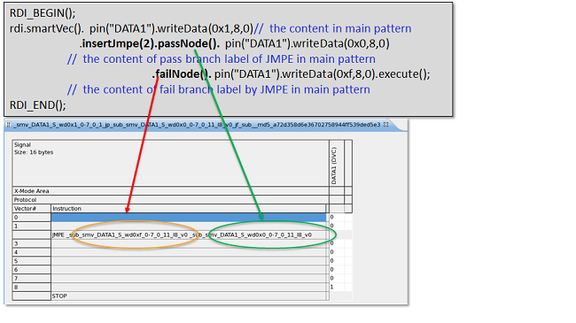

insertJmpe()
This function allows inserting vectors as a subroutine called by the JMPE instruction into a main label or another subroutine.
It works with passNode() and failNode() which define
the content for the pass and the fail branches.
Its behavior in connection with label() is similar to insertSub().
JSUB and JMPE can get inserted into each other by using level. See Example 2 and Example 3 at the bottom of this topic.
insertJmpe() can be used with
readData() and readBit(). Below are the rules of using
readData() and readBit() together with
insertJmpe() in the same execute().
readData()andreadBit()cannot be put within a sublabel generated byinsertJmpe()because the JMPE branching is not predictable.insertJmpe()cannot be inserted into areadData()orreadBit()area in the main pattern.- After the vector invokes a sublabel inserted by
insertJmpe(),readData()orreadBit()in the main label cannot be used in the EMAP mode because the cycle count after JMPE is not fixed. It can only be used in the DIGCAP mode.
Syntax
insertJmpe(int vecLine, int level);
Parameter |
Description |
|---|---|
vecLine |
Number of the vector line where you want to insert the subroutine. |
level |
Subroutine level. This refers to the target level at which you want to insert a new subroutine. The default value is 1, which means the first level subroutine and actually refers to the main pattern. To insert a subroutine into another subroutine, you should specify a level larger than 1. |
Return value
There is no return value.
Examples
Example 1
RDI_BEGIN();
rdi.smartVec(). pin("DATA1").writeData(0x1,8,0)// the content in main pattern
.insertJmpe(2).passNode().pin("DATA1").writeData(0x0,8,0) // the content of pass branch label of JMPE in main pattern
.failNode().pin("DATA1").writeData(0xf,8,0).execute(); // the content of fail branch label by JMPE in main pattern
RDI_END();This code example inserts two subroutines into the pattern at vector 2: one subroutine for pass node and the other for fail node. See the figure below.

Example 2
You can use insertJmpe() inside insertSub(). Below is an
example.
RDI_BEGIN();
...
rdi.smartVec().pin()...pin()...
.insertSub(3).repeatSub()...
.insertJmpe(5,2).passNode()...
.failNode()...
.execute();
...
RDI_END();Example 3
You can also use insertSub() inside
insertJmpe(). Below is an
example.
RDI_BEGIN();
...
rdi.smartVec().pin()...pin()...
.insertJmpe(3)
.passNode()...
.insertSub(5,2).repeatSub()...
.failNode()...
.execute();
...
RDI_END();Example 4
You can insert JSUB and JMPE in the same vector line of a label. The JSUB instruction is invoked before the JMPE instruction in this case. Below is an example.
RDI_BEGIN();
rdi.smartVec("id5").pin("DATA1").writeData(0x1,8,0)
.insertSub(2).pin("DATA1").writeData(0x1,8,0)
.insertSub(2).pin("DATA1").writeData(0x2,8,0)
.insertJmpe(2).passNode().pin("DATA1").writeData(0x3,8,0)
.failNode().pin("DATA1").writeData(0x4,8,0)
.execute();
RDI_END();Functional changes
- Introduced in SmartRDI 2.4.4